Installation
Via pip
Pre-requisite
synphage relies on one non-python dependency, Blast+ >= 2.12.0, that need to be manually installed when synphage is installed with pip.
Install synphage
synphageis available as a Python package and can be install with the Python package manager pip in an opened terminal window.
# Latest
pip install synphage
# Latest
python -m pip install synphage
This will automatically install compatible versions of all Python dependencies.
Run synphage
-
Environment variables
-
synphageuses the environment variableDATA_DIRto allow the user to specify a data directory.export DATA_DIR=/path_to_dataInfo
- If no data directory is set, the data folder will be the temporary folder by default. The current data directory can be checked in the config panel of the jobs.
- This directory contains all the data generated during the run as well as the genbank files and sequences.csv file added by the user.
-
Set
EMAILandAPI_KEYenvironment variables (optional). These variables are only required if you want to use theNCBI_downloadjob.export EMAIL=john.doe@domain.com export API_KEY=gdzjdfzkhlh6832HBkh -
Optional. Set the environment variable DAGSTER_HOME to keep track of the previous run and generated assets.
export DAGSTER_HOME=/dagsterInfo
This directory contains the information linked to the run of the pipeline. In order to keep the information about previous runs when working in the same project, it is advice to connect a volume to it otherwise information will be wiped out when the container is removed.
-
-
Copy genbank files in the
/genbank/directory of youDATA_DIRcp path_to_my_gb_files/*.gb /<path_to_data>/genbank/Warning
The use of spaces and special characters in file names, might cause error downstream.
Note
.gband.gbkare both valid extension for genbank files -
For ploting add a sequences.csv file in the /data directory. Format your file according to the example below:
168_SPbeta.gb,0 Phi3T.gb,1# Create file touch sequences.csv # Edit file vim sequences.csv # Copy file to the /data directory docker cp path_to_file/sequences.csv /data/Warning
Please here use only
.gbas file extension.Info
The integer after the comma represents the orientation of the sequence in the synteny diagram. 0 : sequence 1 : reverse
-
Start dagster and synphage
dagster dev -h 0.0.0.0 -p 3000 -m synphage
Via docker
Pre-requisite : docker
In order to use synphage Docker Image, you first need to have docker installed.
- Install docker desktop from the executable.
- Check the full documentation for docker Linux.
- Install docker desktop from the executable.
- Check the full documentation for docker Mac.
- Install docker desktop from the executable.
- Check the full documentation for docker Windows.
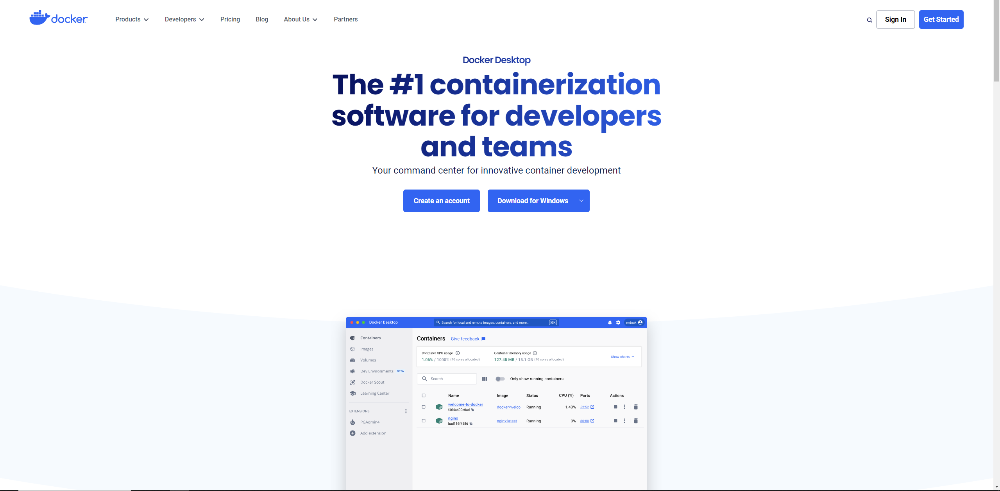
Info
When installing docker from the website, the right version should automatically be selected for your computer.
Pull synphage image
-
Open the docker desktop app and go to
Images.
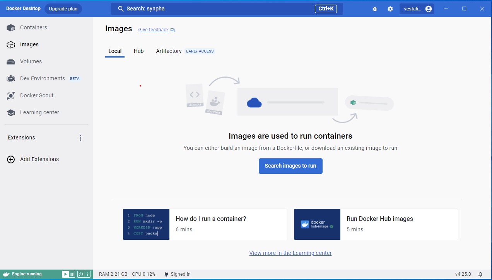
-
Go to the search bar and search for
synphage.
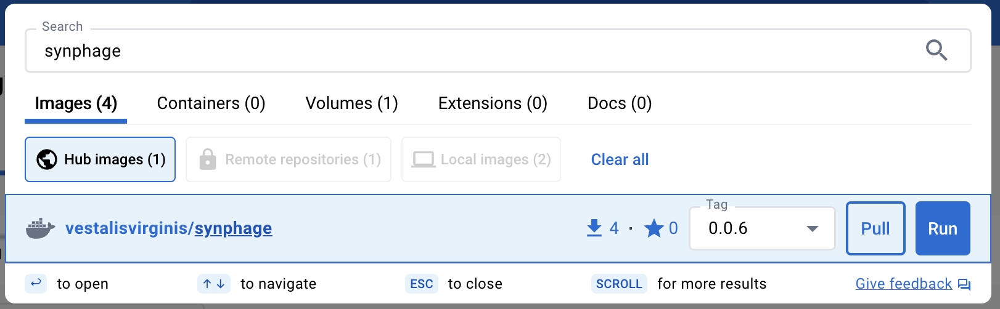
-
Pull the image (it will automatically select for the latest image (advised)).
-
The synphage image is installed
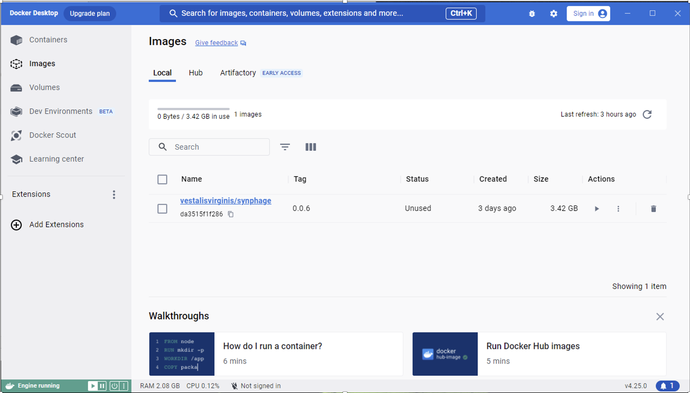
Note
Your Dashboard might look a bit different depending on the Docker Desktop version and your OS.
# Pull the image from docker hub
docker pull vestalisvirginis/synphage:latest
# List installed Docker Images
docker image ls
0.0.6).
Run synphage container
-
Start the container
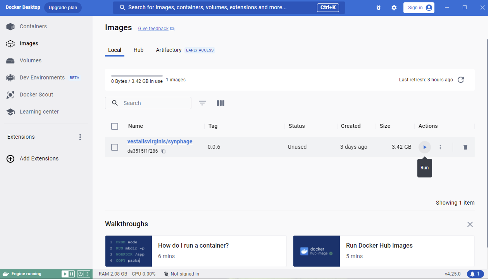
-
Open the drop-down menu
Optional settings:
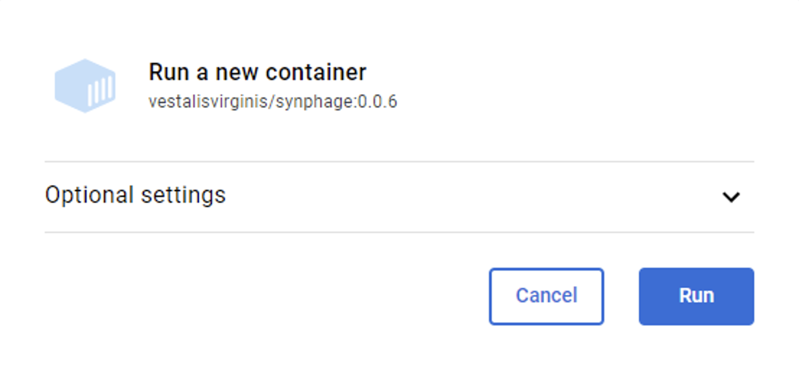
-
Set the
portto 3000 (or any other port still available on your computer).
Port is the only setting required for running the program, as it uses a web-interface.
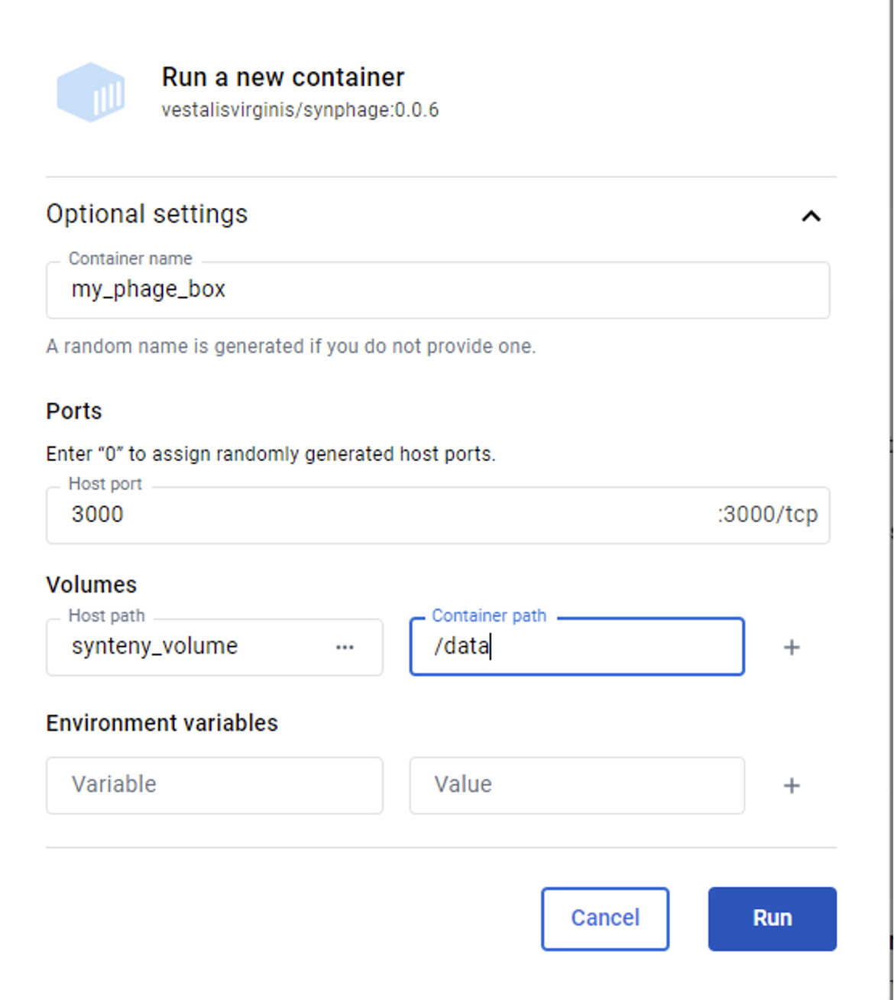
-
Set
EMAILandAPI_KEYenvironment variables (optional). These variables are only required if you want to use theNCBI_downloadjob.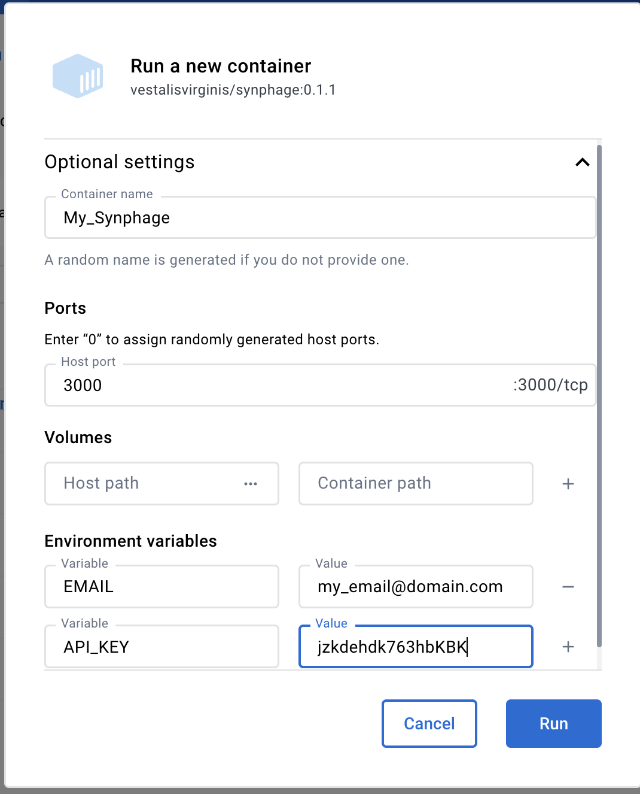
-
Press the
Runbotton. -
In
Containers -> Files: Drag and drop your genbank files in the/data/genbankdirectory of your running container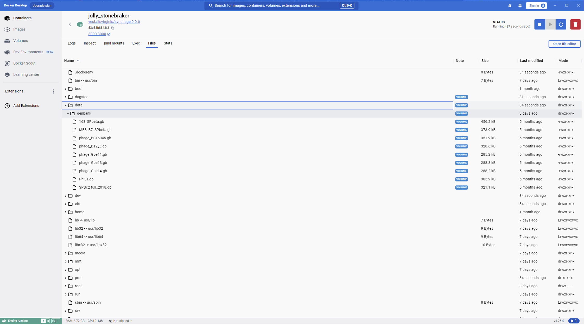
Warning
The use of spaces and special characters in file names, might cause error downstream.
Note
.gband.gbkare both valid extension for genbank files -
For ploting add a
sequences.csvfile in the /data directory. Please use the file editor of the docker to check that the format of your file is according to the example below:Example of incorrectly formatted csv file (can happen when saved from excel):168_SPbeta.gb,0 Phi3T.gb,1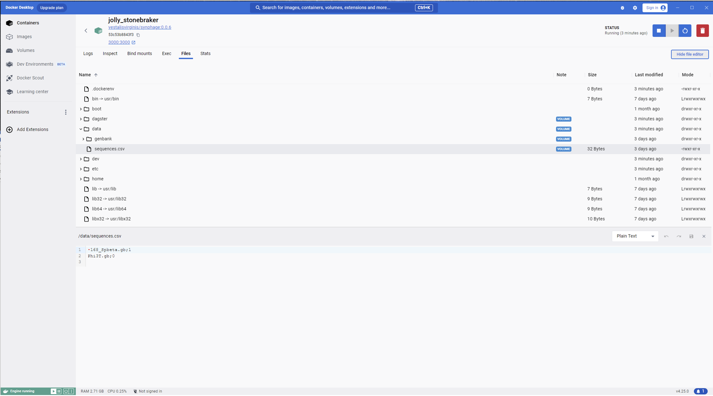
Example of correctly formatted csv file:
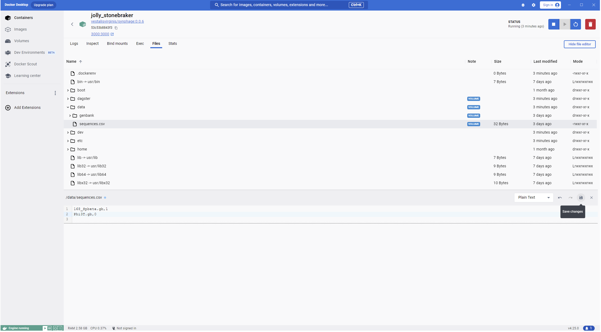
Warning
Please here use only
.gbas file extension.Info
The integer after the comma represents the orientation of the sequence in the synteny diagram. 0 : sequence 1 : reverse
-
Connect to the web interface
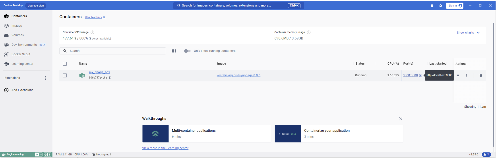
-
Environnment variable Only required if you want to use the
NCBI_downloadjob. The variables can be exported before starting the container or a .env file can be copied into the working directory.export EMAIL=john.doe@domain.com export API_KEY=gdzjdfzkhlh6832HBkhEMAIL=john.doe@domain.com API_KEY=gdzjdfzkhlh6832HBkhNote
Dagster will recognise and import environment variable from the .env file automatically.
-
Start the container
docker run -d --rm --name my_phage_box -p 3000:3000 vestalisvirginis/synphage:latest -
Copy genbank files in the
/data/genbank/directory of the containerdocker cp path_to_my_gb_files/*.gb container_id:/data/genbank/Warning
The use of spaces and special characters in file names, might cause error downstream.
Note
.gband.gbkare both valid extension for genbank files -
For ploting add a sequences.csv file in the /data directory. Format your file according to the example below:
168_SPbeta.gb,0 Phi3T.gb,1# Create file touch sequences.csv # Edit file vim sequences.csv # Copy file to the /data directory docker cp path_to_file/sequences.csv /data/Warning
Please here use only
.gbas file extension.Info
The integer after the comma represents the orientation of the sequence in the synteny diagram. 0 : sequence 1 : reverse
-
Open localhost:3000 in your web-browser.
Save your data
Warning
Before stopping the container, don't forget to save your data. You can easily download the folder containing the tables and the graph onto your computer.
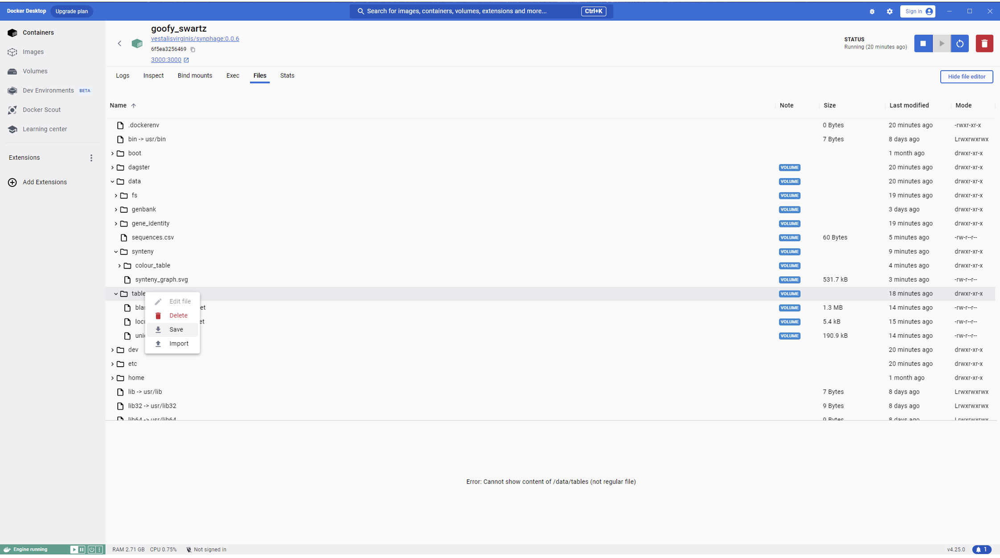
docker cp container-id/data/* your_directory/
Stop and remove your container:
At the end of your work you can stop and remove your container:
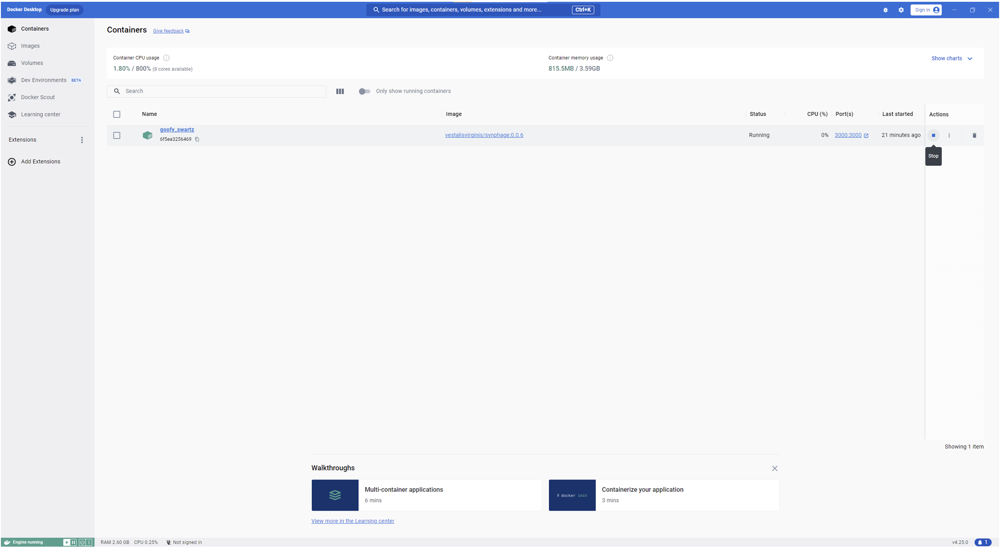
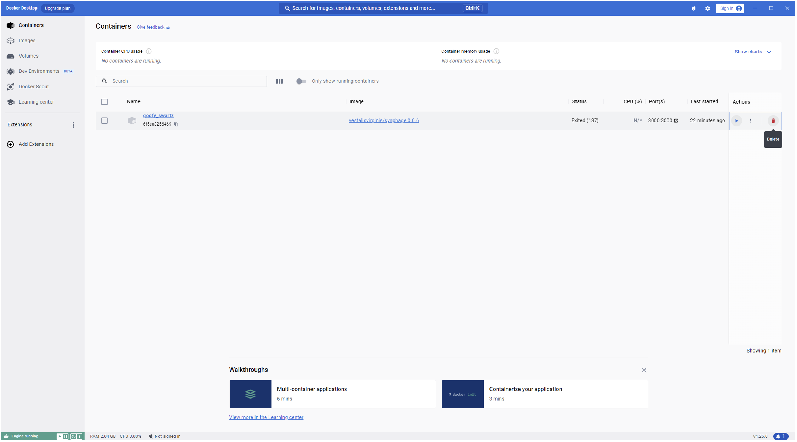
docker stop <container-id>
docker rm <container-id>
Keep your data
Info
The container has two volumes.
/dagster : which contain the information linked to the run of the pipeline. In order to keep the information about previous runs when working in the same project, it is advice to connect a volume to it otherwise information will be wiped out when the container is removed.
/data : which contains all the data generated during the run as well as the genbank files and sequences.csv file added by the user.
In order to keep your data and be able to re-use them, for example re-used previously computed sequences and create new plots, you can create Volumes to attached to the container.
-
Create volume
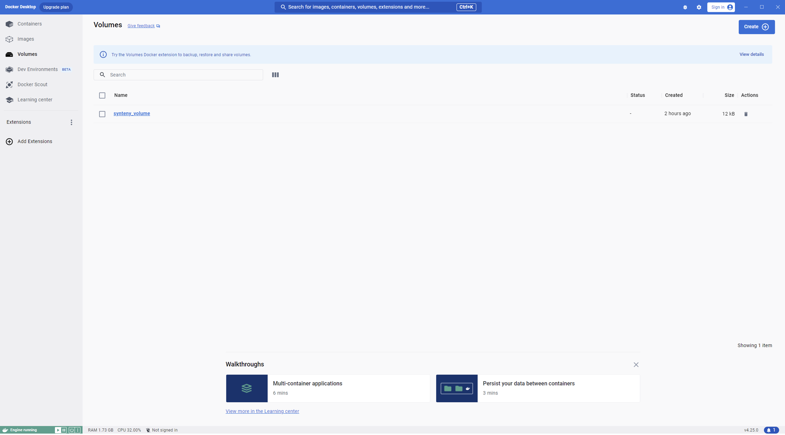
-
Connect your volume to the docker volume when starting your container.
- Create volume
docker volume create synphage_volume - Connect your volume to the docker volume when starting your container.
docker run -d --rm --name my_phage_box -v synphage_volume:/data -p 3000:3000 vestalisvirginis/synphage:latest
Info
A volume can also be created for dagster in order to keep a trace of your previous run. In this case the corresponding volume in the container is /dagster.